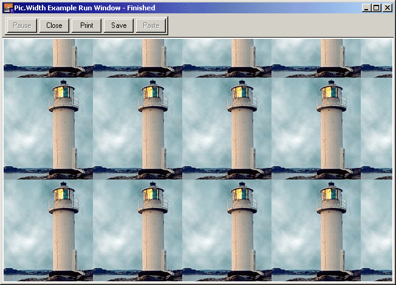

Pic.Height (picID : int) : int
Pic.Height returns the width in pixels of the picture represented by picID.
This function is often used in conjunction with Pic.Width to obtain the dimensions of a picture loaded using Pic.FileNew.
The program draws loads a picture from the file lighthouse.jpg and proceeds to tile the entire run window with copies of the picture.

Output of Example Program
var pic : int := Pic.FileNew ("lighthouse.jpg")
var width : int := Pic.Width (pic)
var height : int := Pic.Height (pic)
var x, y : int := 0
loop
exit when y > maxy
loop
exit when x > maxx
Pic.Draw (pic, x, y, picCopy)
x := x + width
end loop
x := 0
y := y + height
end loop
Exported qualified.
This means that you can only call the function by calling Pic.Height, not by calling Height.
Pic.Width to obtain a picture's width and Pic.FileNew to load a picture from a graphics file.